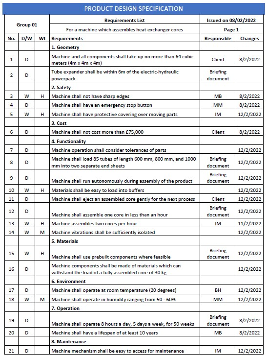
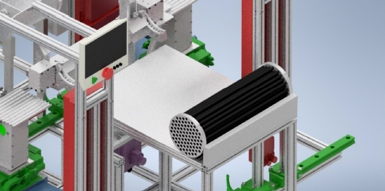
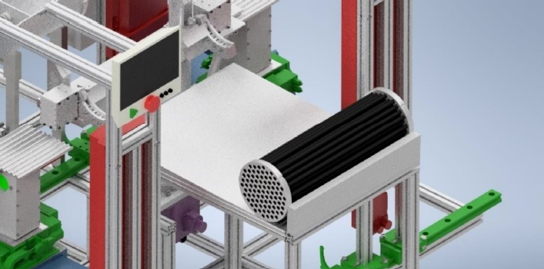

Machine Design
One of the projects that I am most proud of is a university run project that contributed towards my grade in my second year of studies. This was a group project where I was part of a group of 4 and we were given the task of designing a machine that assembled the core of a heat exchanger with varied lengths and were given specifications the machine had to meet.
As a group we formulated a list of specifications shown below which came from a combination of our briefing sheet, our client and choices we made.
After deciding upon a list of requirements that the design had to meet, we each spent a week designing our own concepts for the machine and came together at the end to access each others work and decide what parts from each we wanted to keep. My initial design is shown below:

We then decided upon which element from our designs to incorporate into a final version and I was tasked with drawing this version as well and it’s shown here on the right.
In order to ensure that our design would actually work we needed to perform some sanity calculations. These were split between the group and I was tasked with the calculations for the tube releaser and aligner. This meant working out loads that different components would put on each other including forces needed to allow the mechanism to function. As well as that it required contacting suppliers and researching which parts would be suitable for our purposes. Examples of my calculations are shown below:
We then modelled our final design in Autodesk Inventor as shown below:
The areas I worked on are:
The rotation mechanism
The tube buffer and conveyor mechanism
The machine frame
For the submission of this project I was given the task of producing technical drawings of most of the subassemblies that made up the larger machine as well as rendering a storyboard to show the machine in action and to give an indication as to how it worked. Images of both can be found below:
 
